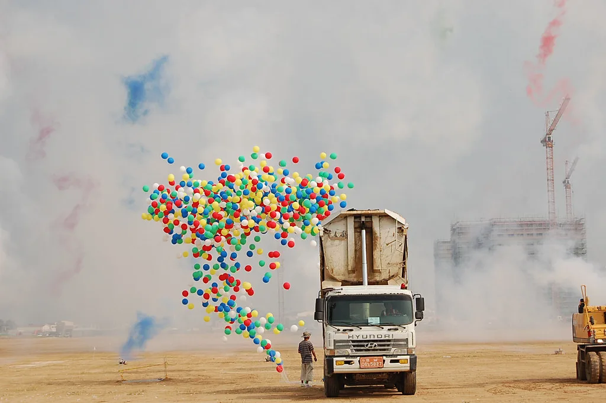

해남 솔라시도서 '국가 AI 컴퓨팅센터' 착공…2028년 가동 목표
전남 해남군 산이면 솔라시도 데이터센터파크 부지에서 3일 '국가 AI 컴퓨팅센터' 착공식이 열렸다. 정부 관계자와 국회의원, 참여 기업 대표 등 200여 명이 참석한 가운데 진행된 이번 착공식은, 국내 인공지능(AI) 인프라 구축을 위한 대형 국책사업이 본격적인 건설 단계에 들어섰음을 알리는 자리였다. 착공식에서는 그동안 논의만 이어져 온 국가 차원의 AI 컴퓨팅 인프라 사업이 실제 부지 조성과 건설로 이어졌다는 점이 특히 강조된 것으로 전해졌다.
국가 AI 컴퓨팅센터는 정부와 민간이 함께 투자하는 방식으로 추진된다. 총사업비는 약 2조5000억원, 전력 용량은 40메가와트(MW) 규모로 계획됐으며, 2028년까지 최첨단 AI 반도체(GPU) 약 1만5000장을 갖춘 시설로 완공하는 것이 목표다. 정부는 이 시설이 완공되면 국내에서 손꼽히는 규모의 AI 전용 컴퓨팅 인프라가 될 것으로 기대하고 있다. 부지가 조성된 해남 솔라시도 일대는 대규모 태양광 발전단지가 들어서 있어, 재생에너지를 활용한 안정적 전력 공급이 가능하다는 점도 입지 선정에 고려된 것으로 알려졌다.

이번 사업은 삼성SDS가 대표사를 맡은 컨소시엄이 주도한다. 컨소시엄에는 네이버클라우드, 삼성물산, 카카오, 삼성전자, KT 등 국내 정보기술(IT)·통신 기업들이 대거 참여했으며, 전라남도와 광주광역시 등 지방자치단체도 협력 기관으로 이름을 올렸다. 정부 부처인 과학기술정보통신부가 사업을 총괄하며, 부지를 제공한 지자체와 민간 기업이 투자와 운영을 분담하는 구조다. 국내 주요 IT 기업들이 한 컨소시엄에 함께 참여한 것은 이례적이라는 평가도 나온다.
이 센터의 핵심 목표는 산업계와 학계, 연구기관에 고성능 컴퓨팅 자원을 공급하는 것이다. 특히 국산 AI 반도체의 개발과 성능 검증, 상용화를 지원하는 역할이 강조된다. 그동안 국내 AI 반도체 기업들은 대규모 연산 자원을 확보하기 어려워 해외 클라우드 서비스에 의존해야 했는데, 이번 센터가 가동되면 국내에서 자체적으로 검증과 개발을 진행할 수 있는 기반이 마련될 것으로 기대된다. 중소 스타트업이나 연구기관도 저렴한 비용으로 대규모 연산 자원에 접근할 수 있는 길이 열릴 전망이다.

정부는 이번 사업을 AI 공급망에서 한국의 위상을 높이는 계기로 삼겠다는 구상이다. 글로벌 AI 경쟁이 반도체와 데이터센터 등 인프라 확보 경쟁으로 확산하는 가운데, 국가 차원의 대규모 컴퓨팅 인프라를 갖추지 못하면 산업 경쟁력에서 뒤처질 수 있다는 위기감이 이번 사업 추진의 배경으로 꼽힌다. 미국과 중국 등 주요국이 이미 국가 차원의 대규모 AI 인프라 투자에 나선 상황에서, 한국도 뒤늦게나마 유사한 흐름에 합류했다는 평가가 나온다.
다만 착공부터 완공까지 상당한 시간이 걸리는 만큼, 사업이 계획대로 진행될지는 지켜봐야 한다는 시각도 있다. 대규모 전력 확보와 반도체 수급, 건설 일정 등 변수가 많아 완공 시점이 늦춰질 가능성도 배제할 수 없다는 지적이다. 정부와 컨소시엄 측은 정기적으로 진행 상황을 점검하며 2028년 목표 완공 시점을 지키겠다는 입장이다. 지역 사회에서는 이번 사업을 계기로 관련 일자리와 부대 산업이 함께 성장할 수 있을지에도 관심을 보이고 있다.